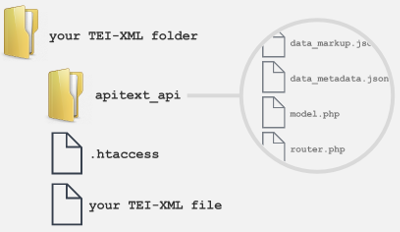

what is apitext?
Apitext is a student built prototype RESTful Application Programing Interface (API) for TEI-XML Transcriptions. Once uploaded to a TEI-XML folder on a website, it exposes a series of Uniform Resource Identifiers (URI). By using these identifier endpoints, a user can retrieve specific information from a TEI-XML file. It's probably easier to show you what our API does. Check out a live demonstration here.

Currently, our prototype only manages one TEI-XML file and only supports URI requests from the same domain as the API itself. To find out about future development plans, please see our "about the project" section.
how do I install apitext?
- You will need to have a website capable of running PHP scripts.
- In order for apitext to work, you will need to designate a folder on your website that will hold your TEI-XML file.
- You will need to upload apitext into that folder.
- You can clone or download the apitext repository here.
- Note: If you choose to download the apitext repository from Github:
- You will need extract the base repository folder from the unzipped folder (when zipping files, Github creates a folder inside a folder).
- You will need to remove the
-masterfrom the end of the base folder's name (when zipping files, Github adds "-master" to the end of the repository name). - You will then need to move the
.htaccessfile outside of theapitext_apifolder. - Once finished your TEI-XML directory should be organized like this:
 - You will then need to edit the
config.jsonfile located inside theapitext_apifolder. - In the
teiFolderentry put the name of your TEI-XML folder. - In the
teiFileentry put the name of your TEI-XML file. - As an example, if your folder was named
my-tei-folderand your file was namedmy-tei-xml-file.xml, then yourconfig.jsonfile would look like this:{ "teiFolder": "my-tei-folder", "teiFile" : "my-tei-xml-file.xml" } - That's it, the API should now be controlling your TEI-XML folder. Use a web browser to navigate to your file folder, you should see a welcome message.
how do I use apitext?
Right now, apitext supports the following URI endpoints. To utilize an endpoint, just place it at the end of the URL path of your TEI folder (example: http://your-site.com/your-tei/api/v1/resources).
api/v1/resources- Returns a listing of all available endpoints for the API.
api/v1/xml- Returns the XML view of the TEI-XML file.
api/v1/text- Returns a text only view of the TEI-XML file.
api/v1/markup- Returns a markup only (HTML) view of the TEI-XML file.
api/v1/elements- Returns a listing of all elements contained within the TEI-XML file.
api/v1/elements/[specific element]- Returns a unique listing of all the textual content contained within the [specific element(s)].
api/v1/annotations- Returns a listing of all annotation elements contained within the TEI-XML file.
api/v1/teiheaders- Returns a listing of all teiheader elements contained within the TEI-XML file.
about the project
For over twenty years the Text Encoding Initiative (TEI) has managed and developed a set of encoding guidelines for the representation of humanities, social science, and linguistics -- to preserve and share -- texts in digital form. Using the Extensible Markup Language (XML) as its backbone, TEI is the generally accepted encoding model for the digital humanities. Due to XML’s extensible nature, It can often be difficult to share these files and even more problematic to make them interoperable. The goal of our student project was to build a prototype Application Programming Interface (API) for TEI-XML documents that provides greater interoperability while at the same time is easy to use by an audience with backgrounds in the humanities, social sciences, and linguistics. Currently, we have produced an API that, once uploaded to a directory containing TEI-XML files, can return multiple views of that file using a Uniform Resource Identifier (URI) as its query method.
The apitext API was directly inspired by this journal article written by Desmond Schmidt.
Delivering a working API prototype into the hands of both users and developers has opened the doors to new avenues of research and development. Future iterations of this prototype intend to:
- Provide a more robust catalogue of view types
-
- The return of both formatted and unformatted “text” views.
- When returning a listing of the contents of a “specific element”, the API should be able to return both unique and multiple occurrence views in multiple data formats (text, HTML, JSON, etc...)
- The return of element attribute metadata views.
- Allow control over an unlimited set of TEI-XML files
-
- Currently, this version of the prototype is capable of controlling only one TEI-XML file.
- Future versions will be able to control whole libraries of TEI-XML files.
- Support TEI-XML schema validation
-
- This version of the prototype does not support schema validation; it assumes the provided XML document is well formed XML.
- Future versions will be able to return information about whether or not the document is valid XML and if it is valid TEI.
- Support static API resource generation
-
- Currently, the API dynamically queries the TEI-XML file each time a request is made.
- If a researcher has published their TEI-XML file, more than likely they will not be modifying that document on a regular basis.
- Future versions should acknowledge this behavior and create static JSON files to hold the data needed for requested views and be able to check for new versions of TEI-XML files and react appropriately.
- Support Cross-Origin Resource Sharing (CORS)
-
- Currently, clients of the API are required to be located on the same server as the API.
- Future versions should include functionality that allows users from other domains access to the API.
- Client domain registration support.
- Documentation that would assist users but also educate users on the pros and cons of implementing this functionality.